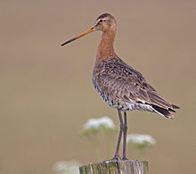
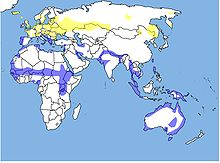

| Black-tailed Godwit |
|  |
| Black-tailed Godwit |
| Conservation status |
|
|
| Binomial name |
Limosa limosa
(Linnaeus, 1758) Brisson,1760 |
|  |
| Distribution of Black-tailed Godwit: blue=winter- and staging area, yellow=breeding area, green=both, resident |
| Synonyms |
|
Scolopax limosa Linnaeus,1758
|
The Black-tailed Godwit, Limosa limosa, is a large, long-legged, long-billed shorebird first described by Carolus Linnaeus in 1758. It is a member of the Limosa genus, the godwits. There are three subspecies, all with orange head, neck and chest in breeding plumage and dull grey-brown winter coloration, and distinctive black and white wingbar at all times.
Its breeding range stretches from Iceland through Europe and areas of central Asia. Black-tailed Godwits spend winter in areas as diverse as Australia, western Europe and west Africa. The species breeds in fens, lake edges, damp meadows, moorlands and bogs and uses estuaries, swamps and floods in winter; it is more likely to be found inland and on freshwater than the similar Bar-tailed Godwit. The world population is estimated to be 634,000 to 805,000 birds and is classified as Near Threatened.

{kind=link}
{kind=link}